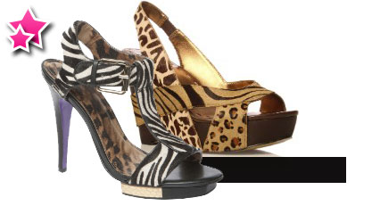
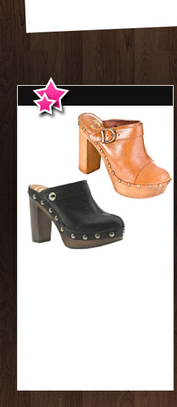
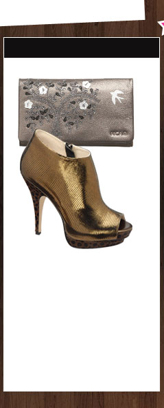
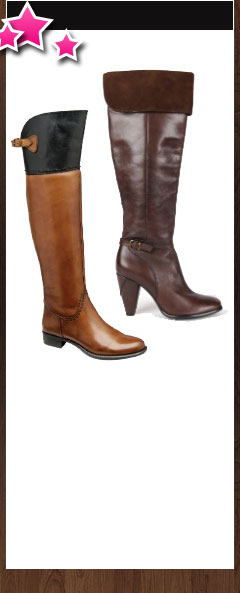
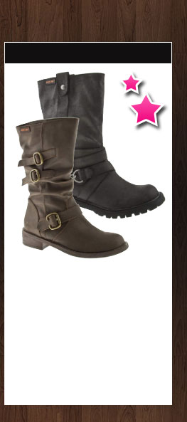

Showcasing this season's must have trends in designer shoes, bags and accessories, we've all the hottest looks, colours and styles from the most sought after fashion brands and exclusive designers. Set the footwear fashion trends now with Viva La Diva.
You'll love this season's wildest trend
Go wild over the animal print trend that’s hit the runways with style this season. Bold zebra and leopard prints are everywhere and they’re the perfect choice to bring a dull outfit to life; wear animal print high heels, bag or accessories with a block colour.

A funky twist on a classic shoe shape
Fashion clogs have taken the footwear trends by storm, with chunky wooden heels, this classic shoe is now one of the most sought after. From simple fashion clogs in traditional designs to funky clog boots, you'll be spoilt for choice.

Gorgeous shimmery metallic shades
The perfect shade to pizzazz to an outfit, metallics are utterly versatile and gorgeous! Whether you choose metallic pewter, silver or gold, it'll add a touch of sparkle. Metallic high heels are perfect as party shoes, while a metallic bag or accessory will finish off your outfit.

An ever so quirky style of boot
The perfect choice for autumn and winter, over the knee and thigh high boots are making a name for themselves in the footwear fashions. In quirky flat sole styles and sexier high heel designs, over the knee boots and thigh high boots will look great worn casually.

With chunky soles and cool detail
Perfect to wear with this season's grunge glamour look, women's biker boots are everywhere right now and it's no wonder why. With their chunky soles and stud or chain detailing, fashion biker boots look fabulous with floral prints for a 80s style.